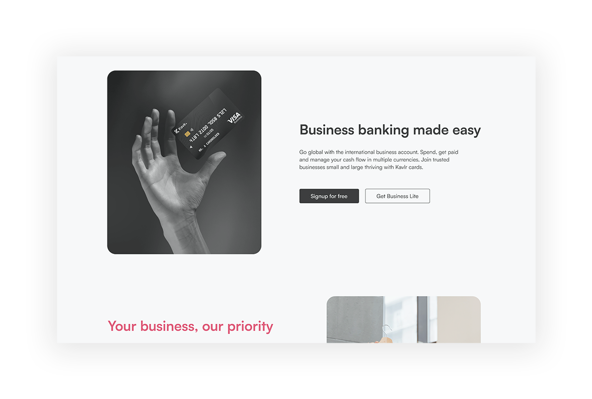
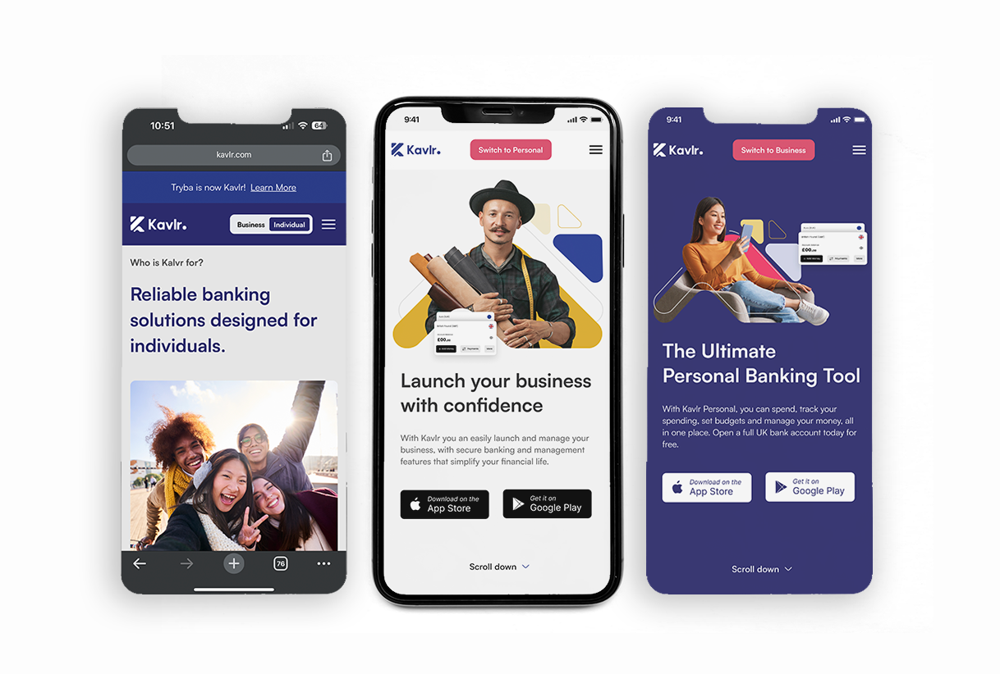

The Context
Kavlr is an ambitious fintech platform designed to serve freelancers, small businesses, and creators with multi-currency payments, booking management, invoicing, a marketplace, and social commerce tools. The challenge was not just designing screens — it was designing a coherent product experience across an unusually wide feature set, for users in very different markets, with a team split between the UK and Nigeria.
The Objective
Design the complete product from landing pages through to admin dashboards. Build a scalable design system that could accommodate rapid feature development. Create mobile-first experiences alongside desktop admin tools. Ensure visual consistency across 60+ unique pages while allowing each feature area to feel purposeful and distinct.
The Approach
The design system was built component-first — a library of reusable elements (buttons, form fields, cards, navigation patterns, modals) that could be assembled into any page configuration without losing brand consistency. Colour coding was used to differentiate product areas: bookings, payments, marketplace, and social commerce each had visual cues that oriented users without explicit labelling. The landing page was designed to communicate the platform's breadth without overwhelming new users.

The Execution
Justin designed: the complete landing page and marketing website; the personal dashboard with transaction history, wallet management, and analytics; the business dashboard with invoicing, booking management, and team tools; the booking flow — a multi-step process covering service selection, scheduling, payment, and confirmation; the marketplace interface for discovering and purchasing services; mobile app screens optimised for on-the-go use; the Kavlr Embed widget allowing businesses to add booking functionality to external websites; the no-code checkout system; and the comprehensive design system powering all components.


The Impact
Kavlr's design system enabled the engineering team to build rapidly without sacrificing visual quality. The 60+ page design package gave investors and stakeholders a tangible, polished vision of the product's potential. The cross-country collaboration model — Justin leading design from one timezone while developers worked from another — became a template for how the company approached distributed product development.
"A design system that let engineers build rapidly without sacrificing visual quality."